<!doctype html>
<html lang="es">
<head>
<link rel="stylesheet" type="text/css" href="base.css" />
<link rel="stylesheet" type="text/css" href="exe_effects.css" />
<link rel="stylesheet" type="text/css" href="content.css" />
<link rel="stylesheet" type="text/css" href="nav.css" />
<meta http-equiv="content-type" content="text/html;  charset=utf-8" />
<title>3.3. Las magnitudes eléctricas. La Ley de Ohm. La potencia eléctrica. | ELECTRIFICANDO UNA VIVIENDA  </title>
<link rel="shortcut icon" href="favicon.ico" type="image/x-icon" />
<meta name="author" content="Tecnología" />
<link rel="license" type="text/html" href="http://creativecommons.org/licenses/by-nc-sa/4.0/" />
<meta name="generator" content="eXeLearning 2.8.1 - exelearning.net" />
<!--[if lt IE 9]><script type="text/javascript" src="exe_html5.js"></script><![endif]-->
<script type="text/javascript" src="exe_jquery.js"></script>
<script type="text/javascript" src="exe_effects.js"></script>
<script type="text/javascript" src="common_i18n.js"></script>
<script type="text/javascript" src="common.js"></script>
<link rel="stylesheet" type="text/css" href="udl-content.css" />
<script type="text/javascript" src="udl-content.js"></script>
<meta name="viewport" content="width=device-width, initial-scale=1" />
<link href="https://fonts.googleapis.com/css2?family=Lato&display=swap" rel="stylesheet"  type="text/css">
<link href="https://fonts.googleapis.com/css2?family=Atkinson+Hyperlegible&display=swap" rel="stylesheet" type="text/css">
<link href="https://fonts.cdnfonts.com/css/opendyslexic" rel="stylesheet">
<link href="https://fonts.googleapis.com/css2?family=Open+Sans&display=swap" rel="stylesheet" type="text/css">
<link href="https://fonts.googleapis.com/css2?family=Roboto&display=swap" rel="stylesheet"  type="text/css">
<link href="https://fonts.googleapis.com/css2?family=Montserrat&display=swap" rel="stylesheet"  type="text/css">


<style>
  
  .z-index {
    z-index: 999;
  }

  .select-container {
    display: inline-block;
    position: relative;
    z-index: 999;
  }

  .font-button {
    padding: 8px 16px;
    border: 1px solid black;
    border-radius: 5px;
    cursor: pointer;
    font-size: 14px;
    margin: 8px;
    text-align: center;
    text-decoration: none;
    background-color: white;
    color: black;
    z-index: 999;
  }

  .fontButtonContainer {
     z-index: 999;
    display: flex;
    justify-content: center;
    align-items: center;
    flex-wrap: wrap; /* establece el wrap para que los botones se distribuyan en varias líneas */
    gap: 5px; /* ajusta el espacio entre los botones */
    position: static; /* fija la barra de botones en la página: static para que aparezca en la parte superior, fixed para que quede flotando */
    top: 40px; /* fija la barra de botones en la parte superior de la página */
    left: 0; /* fija la barra de botones en el margen izquierdo */
    right: 0; /* fija la barra de botones en el margen derecho */
    margin: auto; /* centra la barra de botones horizontalmente */
  }
    
  /* Estilo para el desplegable */
  select {
    padding: 8px 4px;
    border: 1px solid black;
    border-radius: 5px;
    cursor: pointer;
    font-size: 14px;
    margin: 6px;
    text-align: center;
    text-decoration: none;
    background-color: white;
  }
  
  select option {
  text-align: left;
  }
  
</style>

<script>

// BatexeGo v3 Juan José de Haro 

// Define los textos que se ven en pantalla. Reemplazar el texto entre comillas

  // Textos del menú desplegable
    const defaultText = 'Parámetros por defecto:'; //Descripción de la opción por defecto
    const standardText = 'Fuente estándar'; // Fuente original del documento
    
    const dyslexicDesc = 'Dislexia:'; // Descripción de la opción OpenDyslexic  
    const dyslexicText = 'OpenDyslexic'; 
    
    const hyperlegibleDesc = 'Deficiencias visuales:'; // Descripción de la opción Atkinson Hyperlegible
    const hyperlegibleText = 'Atkinson Hyperlegible'; 
    
    const highLegibilityDesc = 'Alta legibilidad:'; // Descripción de las opciones de alta legibilidad
    const opensansText = 'OpenSans'; 
    const robotoText = 'Roboto'; 
    const latoText = 'Lato'; 
    const montserratText = 'Montserrat'; 

  // Botones aumentar y disminuir fuente
    const increaseFontText = 'A+'; // Botón para incrementar la fuente
    const increaseFontTitle = 'Incrementa la fuente'; // Texto emergente al pasar el ratón
    
    const decreaseFontText = 'A-'; // Botón para reducir la fuente
    const decreaseFontTitle = 'Reduce la fuente'; // Texto emergente al pasar el ratón

  // Botón para traducir
    const translateText = '🌐'; // Texto para el botón de traducción de Google
    const translateTitle = 'Traduce la página'; // Texto emergente al pasar el ratón

  // Botón para leer / detener la lectura en voz alta
    let readText = 'Leer'; // Botón para leer en voz alta el contenido de la página
    const readTextTitle ='Lee en voz alta la selección o la página entera'; // Texto emergente al pasar el ratón
    
    const stopText = 'Detener'; // Texto del botón para detener la lectura
    const stopTextTitle = 'Detiene la lectura'; // Texto emergente al pasar el ratón
  
  // Botones para que los botones estén siempre visibles
    let floatingFix = 'Fijar'; // Texto del botón flotante cuando está sobre el texto
    let floatingFixTitle = 'Fija la barra de botones en la parte superior'; // Texto emergente al pasar el ratón
    
    let floatingFloat = 'Flotar'; //Texto del botón flotante cuando está fijo en la parte superior
    let floatingFloatTitle = 'La barra permanecerá siempre visible';
  
  
  // Enlace +Info
    const infoText = '+Info'; // Texto del enlace +Info
    const infoTextLink = 'https://batexego.bilateria.org'; // Destino del enlace de +Info

// Fin 
  

  readText = `${readText} (${document.documentElement.lang})`; //Se añade el idioma al botón Leer
  

  let originalFont;
  let currentFontSize;
  let originalFontSize;
  let isReading = false;
  let utterance = new SpeechSynthesisUtterance();
  let googleTranslateWidgetVisible = localStorage.getItem('googleTranslateWidgetVisible');

  function setFont(font) {
  document.body.style.fontFamily = font;
  localStorage.setItem('font', font);
  }

  function setFontSize(size) {
  currentFontSize = parseInt(window.getComputedStyle(document.body).getPropertyValue('font-size'));
  currentFontSize += size;
  document.body.style.fontSize = currentFontSize + 'px';
  localStorage.setItem('fontSize', currentFontSize + 'px');
  }
  
  

function toggleGoogleTranslateWidget() {
  if (!googleTranslateWidgetVisible) {
    const script = document.createElement('script');
    script.src = 'https://translate.google.com/translate_a/element.js?cb=googleTranslateElementInit';
    script.id = 'google-translate-script';
    document.head.appendChild(script);
    
    const googleTranslateElement = document.createElement('div');
    googleTranslateElement.id = 'google_translate_element';
    googleTranslateElement.style.position = 'fixed';
    googleTranslateElement.style.top = '0';
    googleTranslateElement.style.right = '0';
    googleTranslateElement.style.zIndex = '1000';
    document.body.appendChild(googleTranslateElement);

    window.googleTranslateElementInit = function() {
      new google.translate.TranslateElement({pageLanguage: 'auto', layout: google.translate.TranslateElement.FloatPosition.TOP_RIGHT}, 'google_translate_element');
    };

    googleTranslateWidgetVisible = true;
    
  } else {
    const script = document.getElementById('google-translate-script');
    script.remove();
    
    const googleTranslateElement = document.getElementById('google_translate_element');
    googleTranslateElement.remove();

    googleTranslateWidgetVisible = false;
  }
  localStorage.setItem('googleTranslateWidgetVisible',googleTranslateWidgetVisible);
}


  document.addEventListener('DOMContentLoaded', () => {

    googleTranslateWidgetVisible = JSON.parse(localStorage.getItem('googleTranslateWidgetVisible'));
  if(googleTranslateWidgetVisible) {
    googleTranslateWidgetVisible = false;
    toggleGoogleTranslateWidget();
  }

    
  
    originalFont = window.getComputedStyle(document.body).getPropertyValue('font-family');
    localStorage.setItem('originalFont', originalFont);
    let font = localStorage.getItem('font');
    if (!font) {
    font = originalFont;
    }
    document.body.style.fontFamily = font;

    let fontSize = localStorage.getItem('fontSize');
    originalFontSize = window.getComputedStyle(document.body).getPropertyValue('font-size');
    localStorage.setItem('originalFontSize', originalFontSize);
    if (!fontSize) {
    fontSize = originalFontSize
    localStorage.setItem('fontSize', fontSize);
    }
    document.body.style.fontSize = fontSize;

    const fontButtonContainer = document.createElement('div');
    fontButtonContainer.classList.add('fontButtonContainer'); 
    
    const selectContainer = document.createElement('div');
    selectContainer.classList.add('select-container');
    const select = document.createElement('select');
    select.classList.add('z-index');
    const standardOption = document.createElement('option');
    standardOption.value = 'standard';
    standardOption.text = standardText;

    const defaultFontOptGroup = document.createElement('optgroup');
    defaultFontOptGroup.label = defaultText;
    defaultFontOptGroup.appendChild(standardOption);

    select.appendChild(defaultFontOptGroup);


    const dyslexicOption = document.createElement('option');
    dyslexicOption.value = 'dyslexic';
    dyslexicOption.text = dyslexicText;
    select.add(dyslexicOption);

    const dyslexicOptGroup = document.createElement('optgroup');
    dyslexicOptGroup.label = dyslexicDesc;
    dyslexicOptGroup.appendChild(dyslexicOption);
    select.appendChild(dyslexicOptGroup);

    const hyperlegibleOption = document.createElement('option');
    hyperlegibleOption.value = 'hyperlegible';
    hyperlegibleOption.text = hyperlegibleText;
    select.add(hyperlegibleOption);

    const hyperlegibleOptGroup = document.createElement('optgroup');
    hyperlegibleOptGroup.label = hyperlegibleDesc;
    hyperlegibleOptGroup.appendChild(hyperlegibleOption);
    select.appendChild(hyperlegibleOptGroup);

    const opensansOption = document.createElement('option');
    opensansOption.value = 'Open Sans';
    opensansOption.text = opensansText;
    select.add(opensansOption);

    const robotoOption = document.createElement('option');
    robotoOption.value = 'Roboto';
    robotoOption.text = robotoText;
    select.add(robotoOption);

    const latoOption = document.createElement('option');
    latoOption.value = 'Lato';
    latoOption.text = latoText;
    select.add(latoOption);

    const montserratOption = document.createElement('option');
    montserratOption.value = 'Montserrat';
    montserratOption.text = montserratText;
    select.add(montserratOption);  
    

    const highLegibilityOptGroup = document.createElement('optgroup');
    highLegibilityOptGroup.label = highLegibilityDesc;
    highLegibilityOptGroup.appendChild(latoOption);
    highLegibilityOptGroup.appendChild(montserratOption);
    highLegibilityOptGroup.appendChild(opensansOption);
    highLegibilityOptGroup.appendChild(robotoOption);
    
    
    
    select.appendChild(highLegibilityOptGroup);

    // Seleccionar la opción correspondiente al cargar la página
    if (font === originalFont) { // Nueva condición
    select.selectedIndex = 0; // Nueva línea
    } else if (font === 'OpenDyslexic') {
    select.selectedIndex = 1;
    } else if (font === 'Atkinson Hyperlegible') {
    select.selectedIndex = 2;
    } else if (font === 'Roboto') {
    select.selectedIndex = 6;
    } else if (font === 'Lato') {
    select.selectedIndex = 3;
    } else if (font === 'Open Sans') {
    select.selectedIndex = 5;
    } else if (font === 'Montserrat') {
    select.selectedIndex = 4;
    }

    select.addEventListener('change', () => {
    const font = select.value;
    if (font === 'standard') {
    setFont(originalFont);
    fontSize = originalFontSize;
    localStorage.setItem('fontSize', fontSize);
    document.body.style.fontSize = localStorage.getItem('originalFontSize');
    } else if (font === 'dyslexic') {
    setFont('OpenDyslexic');
    } else if (font === 'hyperlegible') {
    setFont('Atkinson Hyperlegible');
    } else if (font === 'Open Sans') {
    setFont('Open Sans');
    } else if (font === 'Roboto') {
    setFont('Roboto');
    } else if (font === 'Lato') {
    setFont('Lato');
    }  else if (font === 'Montserrat') {
    setFont('Montserrat');
    }
    });

    selectContainer.appendChild(select);
    fontButtonContainer.appendChild(selectContainer);
    

    const increaseFontButton = document.createElement('button');
    increaseFontButton.classList.add('font-button');
    increaseFontButton.textContent = increaseFontText;
    increaseFontButton.setAttribute('title', increaseFontTitle);
    increaseFontButton.addEventListener('click', () => setFontSize(1));
    fontButtonContainer.appendChild(increaseFontButton);

    const decreaseFontButton = document.createElement('button');
    decreaseFontButton.classList.add('font-button');
    decreaseFontButton.textContent = decreaseFontText;
    decreaseFontButton.setAttribute('title', decreaseFontTitle);
    decreaseFontButton.addEventListener('click', () => setFontSize(-1));
    fontButtonContainer.appendChild(decreaseFontButton);
    
    const translateButton = document.createElement('button');
    translateButton.classList.add('font-button');
    translateButton.textContent = translateText;
    translateButton.setAttribute('title', translateTitle);
    translateButton.addEventListener('click', toggleGoogleTranslateWidget);
    fontButtonContainer.appendChild(translateButton);

  // Botón para leer en voz alta
    const readButton = document.createElement('button');
    readButton.classList.add('font-button');
    readButton.textContent = readText;
    readButton.setAttribute('title', readTextTitle);
    
    readButton.addEventListener('click', () => {
    let selectedText = window.getSelection().toString();
    let text = '';
    let lang = document.documentElement.lang;
    if (selectedText !== '') {
      text = selectedText;
      let selectedNode = window.getSelection().anchorNode;
      while (selectedNode && selectedNode.nodeType !== Node.ELEMENT_NODE) {
        selectedNode = selectedNode.parentNode;
      }
      if (selectedNode) {
        const selectedLang = selectedNode.getAttribute('lang');
        if (selectedLang) {
          lang = selectedLang;
        }
      }
    } else {
      text = document.body.innerText;
      const bodyLang = document.body.getAttribute('lang');
      if (bodyLang) {
        lang = bodyLang;
      }
    }

    utterance.lang = lang;
    utterance.text = text;

    if (!isReading) {
      isReading = true;
      readButton.textContent = `${stopText} (${lang})`;
      readButton.setAttribute('title', stopTextTitle);
      speechSynthesis.speak(utterance);
    } else {
      isReading = false;
      readButton.textContent = readText;
      readButton.setAttribute('title', readTextTitle);
      speechSynthesis.cancel();
    }

    utterance.addEventListener('end', () => {
      isReading = false;
      readButton.textContent = readText;
      readButton.setAttribute('title', readTextTitle);
    });
  });  
    
    fontButtonContainer.appendChild(readButton);
    
  // Botón para que la barra esté siempre visible
    const floatingButton = document.createElement('button');
    floatingButton.classList.add('font-button');
    floatingButton.textContent = floatingFloat;
    floatingButton.setAttribute('title', floatingFloatTitle);
    floatingButton.addEventListener('click', () => {
    if (floatingButton.textContent === floatingFix) {
      fontButtonContainer.style.position = 'static';
      floatingButton.textContent = floatingFloat;
      floatingButton.setAttribute('title', floatingFloatTitle);
      localStorage.setItem('floatState', 'static');
    } else {
      fontButtonContainer.style.position = 'fixed';
      floatingButton.textContent = floatingFix;
      floatingButton.setAttribute('title', floatingFixTitle);
      localStorage.setItem('floatState', 'fixed');
    }
  });

    

    let floatState = localStorage.getItem('floatState');
    if (!floatState) {
      floatState = 'static';
      floatingButton.textContent = floatingFix;
      floatingButton.setAttribute('title', floatingFixTitle);
    }
    if (floatState === 'fixed') {
      fontButtonContainer.style.position = 'fixed';
      floatingButton.textContent = floatingFix;
      floatingButton.setAttribute('title', floatingFixTitle);
    } else {
      fontButtonContainer.style.position = 'static';
      floatingButton.textContent = floatingFloat;
      floatingButton.setAttribute('title', floatingFloatTitle);
    }
    
    localStorage.setItem('floatState', floatState);
    
  fontButtonContainer.appendChild(floatingButton);


    const infoLink = document.createElement('a');
    infoLink.textContent = infoText;
    infoLink.href = infoTextLink;
    infoLink.target = '_blank';
    infoLink.style.marginLeft = '8px';
    infoLink.style.fontSize = '12px';
    fontButtonContainer.appendChild(infoLink);

    
    infoLink.classList.add('z-index');

    document.body.insertBefore(fontButtonContainer, document.body.firstChild);
   
  });
  
  

</script></head>
<body class="exe-web-site" id="exe-node-227"><script type="text/javascript">document.body.className+=" js"</script>
<div id="content">
<p id="skipNav"><a href="#main" class="sr-av">Saltar la navegación</a></p>
<header id="header" ><div id="headerContent">ELECTRIFICANDO UNA VIVIENDA </div></header>
<nav id="siteNav">
<ul>
   <li><a href="index.html" class="daddy main-node">Situación de Aprendizaje 4. Electrificando una vivienda</a></li>
   <li><a href="antes_de_empezar.html" class="no-ch">Antes de empezar</a></li>
   <li><a href="1_diseando_nuestro_circuito_elctrico.html" class="no-ch">1. Diseñando nuestro circuito eléctrico</a></li>
   <li><a href="2_explorando_acerca_de_la_electricidad.html" class="no-ch">2. Explorando acerca de la electricidad</a></li>
   <li class="current-page-parent"><a href="3_estructurando_nuestro_conocimiento.html" class="current-page-parent daddy">3. Estructurando nuestro conocimiento</a>
   <ul>
      <li><a href="31_electricidad_energa_elctrica_conductores_y_aislantes.html" class="daddy">3.1. Electricidad. Energía eléctrica. Conductores y aislantes.</a>
      <ul class="other-section">
         <li><a href="unidad.html" class="no-ch">Unidad</a></li>
      </ul>
      </li>
      <li><a href="32_circuito_elctrico_y_componentes_simbologa_y_representacin.html" class="no-ch">3.2. Circuito eléctrico y componentes. Simbología y representación.</a></li>
      <li id="active"><a href="33_las_magnitudes_elctricas_la_ley_de_ohm_la_potencia_elctrica.html" class="active no-ch">3.3. Las magnitudes eléctricas. La Ley de Ohm. La potencia eléctrica.</a></li>
      <li><a href="34_circuitos_elctricos_abiertos_cerrados_y_en_cortocircuito.html" class="no-ch">3.4. Circuitos eléctricos abiertos, cerrados y en cortocircuito.</a></li>
      <li><a href="35_cculo_de_resistencias_equivalentes.html" class="daddy">3.5. Cáculo de resistencias equivalentes</a>
      <ul class="other-section">
         <li><a href="351_resistencias_en_serie.html" class="no-ch">3.5.1. Resistencias en serie</a></li>
         <li><a href="352_resistencias_en_paralelo.html" class="no-ch">3.5.2. Resistencias en paralelo</a></li>
      </ul>
      </li>
   </ul>
   </li>
   <li><a href="4_aplicando_lo_aprendido.html" class="no-ch">4. Aplicando lo aprendido</a></li>
   <li><a href="5_evaluando_lo_aprendido.html" class="no-ch">5. Evaluando lo aprendido</a></li>
</ul>
</nav>
<div id='topPagination'>
<nav class="pagination noprt">
<a href="32_circuito_elctrico_y_componentes_simbologa_y_representacin.html" class="prev"><span><span>&laquo; </span>Anterior</span></a> <span class="sep">| </span><span class="page-counter">Página <strong>9</strong> de <strong>15</strong></span> <span class="sep">| </span><a href="34_circuitos_elctricos_abiertos_cerrados_y_en_cortocircuito.html" class="next"><span>Siguiente<span> &raquo;</span></span></a>
</nav>
</div>
<div id="main-wrapper">
<section id="main">
<header id="nodeDecoration"><h1 id="nodeTitle">3.3. Las magnitudes eléctricas. La Ley de Ohm. La potencia eléctrica.</h1></header>
<article class="iDevice_wrapper UDLcontentIdevice em_iDevice em_iDevice_udl_eng_orientaciones" id="id1636">
<div class="iDevice emphasis1" >
<header class="iDevice_header"><h1 class="iDeviceTitle">1. Las magnitudes eléctricas</h1></header>
<div class="iDevice_inner">
<div class="iDevice_content_wrapper">
<div id="ta1636_469_2" class="block iDevice_content">
<div class="exe-udlContent exe-udlContent-engagement"><section class="exe-udlContent-block"><div class="exe-udlContent-content"><div class="exe-udlContent-content-main"><p><span style="font-weight: 400;"></span></p>
<p>Las tres magnitudes eléctricas principales que caracterizan un circuito eléctrico son:</p>
<ul style="list-style-type: disc;">
<li style="text-align: justify;">La <strong>Intensidad de corriente I</strong>, es la magnitud que indica el número de electrones que atraviesa la sección de un conductor por unidad de tiempo. En el Sistema Internacional se mide en <strong>Amperio A.&nbsp;</strong>La intensidad de corriente sería similar, por ejemplo, a la cantidad de vehículos por segundo que pasan por una carretera; o a la cantidad de litros de agua por segundo que pasan por una tubería.<strong></strong></li>
</ul>
<p>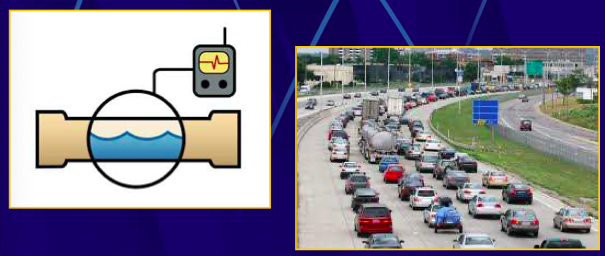</p>
<p><strong></strong></p>
<ul>
<li>El <strong>voltaje V</strong> es la magnitud que mide&nbsp;diferencia de energía que posee una unidad de carga eléctrica entre dos puntos de un circuito.<br>Cuando una carga eléctrica pasa a través de un generador aumenta su energía.Cuando una carga eléctrica pasa a través de un receptor disminuye su energía, la cual se transforma en calor, luz, sonido, etc. &nbsp;<br>En el Sistema Internacional se mide en <strong>voltios (V)</strong>.&nbsp;La tensión o voltaje equivale al desnivel de agua en un circuito hidráulico.<br>Si hay desnivel circula agua y podemos obtener energía de su paso. Sin desnivel no.</li>
</ul>
<p><strong>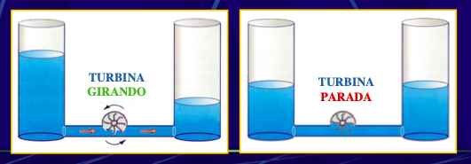</strong></p>
<p><strong></strong></p>
<ul style="list-style-type: disc;">
<li>La<strong> resistencia R </strong>es la medida de la dificultad que oponen los materiales al paso de la corriente eléctrica.<br>Los materiales conductores tienen poca resistencia y los materiales aislantes mucha resistencia.<br>Todos los dispositivos receptores tienen resistencia. Los cables eléctricos también tienen resistencia pero es pequeña y no se suele tener en cuenta.<br>Se representa por R y se mide en el Sistema Internacional en <strong>ohmios (Ω)</strong>.</li>
</ul>
<p><strong>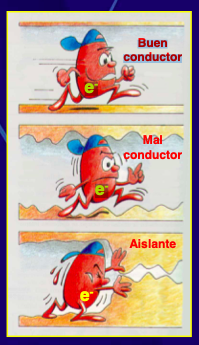</strong></p></div></div></section></div>
</div>
</div>
</div>
</div>
</article>
<article class="iDevice_wrapper UDLcontentIdevice em_iDevice em_iDevice_udl_rep_lee" id="id1637">
<div class="iDevice emphasis1" >
<header class="iDevice_header"><h1 class="iDeviceTitle">2. La Ley de Ohm</h1></header>
<div class="iDevice_inner">
<div class="iDevice_content_wrapper">
<div id="ta1637_470_2" class="block iDevice_content">
<div class="exe-udlContent exe-udlContent-representation"><section class="exe-udlContent-block"><div class="exe-udlContent-content"><div class="exe-udlContent-content-main"><table border="0" style="width: 100%; background-color: #fbff8f;" class="exe-table">
<tbody>
<tr>
<td style="width: 100%;">
<p style="text-align: justify;">La Intensidad de corriente I que circula por un conductor eléctrico es igual al voltaje V dividido por la intensidad I.&nbsp;</p>
<p>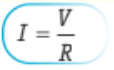</p>
</td>
</tr>
</tbody>
</table>
<table border="0" style="width: 100%; background-color: #fbff8f;" class="exe-table">
<tbody>
<tr>
<td style="width: 100%;">
<p style="text-align: center;"><strong>Para recordar la ley de Ohm</strong></p>
<p style="text-align: justify;">Podemos recordar fácilmente la ley de Ohm con el triángulo mágico. Si marcamos con el dedo la magnitud deseada, nos aparece la fórmula que la relaciona con las otras dos.</p>
<p>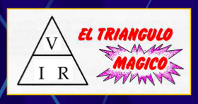</p>
<p style="text-align: center;">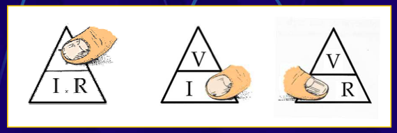</p>
</td>
</tr>
</tbody>
</table>
<table border="0" style="width: 100%; background-color: #fbff8f;" class="exe-table">
<tbody>
<tr>
<td style="width: 100%;">
<p style="text-align: center;"><strong>VAMOS A INTERPRETAR LA LEY DE OHM&nbsp;</strong></p>
<p style="text-align: center;">Para una misma R, cuanto mayor es V mayor será I.</p>
<p style="text-align: center;">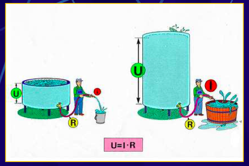</p>
<p style="text-align: center;">Para una misma V, cuanto menor es R mayor será I</p>
<p style="text-align: center;">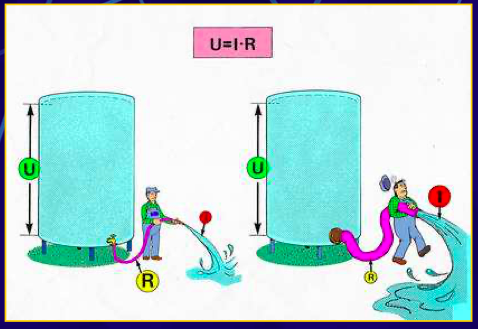</p>

</td>
</tr>
</tbody>
</table>
<table border="0" style="width: 100%; background-color: #fbff8f;" class="exe-table">
<tbody>
<tr>
<td style="width: 100%;">
<p style="text-align: center;"><strong>VAMOS CON UN EJEMPLO&nbsp;</strong></p>
<p>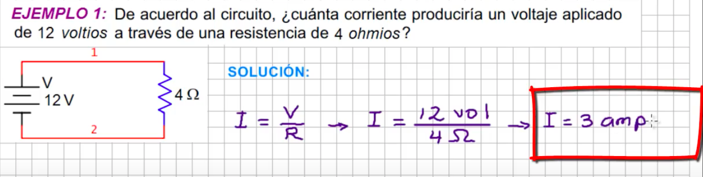</p>
<p>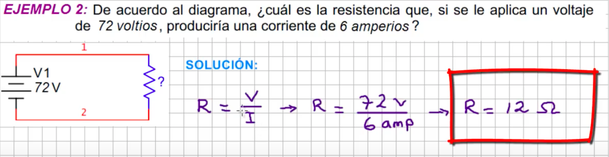</p>
</td>
</tr>
</tbody>
</table></div><article class="exe-udlContent-content-simplified js-hidden"><header class='exe-udlContent-alt-content-title'><h2>Lectura facilitada</h2></header><p>Tipos de Esfuerzos en las Estructuras</p>
<p><strong>1. Tracción:</strong></p>
<p>Ocurre cuando las fuerzas intentan estirar un objeto en direcciones opuestas hacia el exterior. Ejemplos incluyen las gomas de un tirachinas, las cadenas de un columpio o los tirantes de un puente.</p>
<p><strong>2. Compresión:</strong></p>
<p>Surge cuando las fuerzas buscan aplastar o comprimir un objeto, actuando hacia el interior. Ejemplos son las patas de una mesa, los pilares de un puente o las piernas de una persona de pie.</p>
<p><strong>3. Flexión:</strong></p>
<p>Se presenta cuando las fuerzas intentan curvar o doblar un elemento, operando en sentido contrario y separadas. Ejemplos incluyen el dintel de una puerta, las baldas de una estantería o la barra de un armario ropero.</p>
<p><strong>4. Torsión:</strong></p>
<p>Las fuerzas buscan torcer el objeto, induciendo un giro en direcciones opuestas. Ejemplos incluyen afilar un lápiz, girar una llave para abrir una puerta o las vigas perimetrales de los edificios.</p>
<p><strong>5. Cizalladura o Cortante:</strong></p>
<p>Busca seccionar el objeto en un punto específico con fuerzas aplicadas cercanas, pero no enfrentadas. Ejemplos son cortar papel con tijeras, la alcayata en la pared de un cuadro o las uniones de pilares y vigas.</p><button class="exe-udlContent-alt-content-hide">Cerrar</button></article></div></section></div>
</div>
</div>
</div>
</div>
</article>
<article class="iDevice_wrapper UDLcontentIdevice em_iDevice em_iDevice_udl_rep_apoyovisual" id="id1640">
<div class="iDevice emphasis1" >
<header class="iDevice_header"><h1 class="iDeviceTitle">3. En vídeo</h1></header>
<div class="iDevice_inner">
<div class="iDevice_content_wrapper">
<div id="ta1640_813_2" class="block iDevice_content">
<div class="exe-udlContent exe-udlContent-representation"><section class="exe-udlContent-block"><div class="exe-udlContent-content"><div class="exe-udlContent-content-main"><div class="exe-fx exe-carousel">
<h2>La Ley de Ohm</h2>
<p style="text-align: center;"><iframe width="560" height="314" src="https://www.youtube.com/embed/m7HY1Or01S0"></iframe></p>
</div></div></div></section></div>
</div>
</div>
</div>
</div>
</article>
<article class="iDevice_wrapper UDLcontentIdevice em_iDevice em_iDevice_udl_exp_actividad" id="id1641">
<div class="iDevice emphasis1" >
<header class="iDevice_header"><h1 class="iDeviceTitle">4. ¡Vamos a practicar!</h1></header>
<div class="iDevice_inner">
<div class="iDevice_content_wrapper">
<div id="ta1641_818_2" class="block iDevice_content">
<div class="exe-udlContent exe-udlContent-expression"><section class="exe-udlContent-block"><div class="exe-udlContent-content"><div class="exe-udlContent-content-main"><p></p>
<p>Llega el momento de&nbsp;trabajar lo aprendido.&nbsp;</p></div></div></section><section class="exe-udlContent-block"><div class="exe-udlContent-content"><div class="exe-udlContent-content-main"><div class="exe-fx exe-tabs">
<h2>Cuestionario interactivo</h2>
<p>&nbsp;Pincha en el siguiente <a href="https://www.picuino.com/test/es-electric-ohms-law.html">enlace</a> y practica lo aprendido sobre la Ley de Ohm y las magnitudes eléctricas.</p>
<h2>Ejercicios para realizar en el cuaderno</h2>
<p>Pincha en el siguiente <a href="https://www.edu.xunta.gal/centros/cafi/aulavirtual/mod/page/view.php?id=25235">enlace</a> y haz los ejercicios en el cuaderno.</p>
</div></div></div></section></div>
</div>
</div>
</div>
</div>
</article>
<article class="iDevice_wrapper textIdevice em_iDevice" id="id727">
<div class="iDevice emphasis1" >
<header class="iDevice_header iDevice_header_noIcon"><h1 class="iDeviceTitle">5. Repasamos lo que hemos aprendido</h1></header>
<div class="iDevice_inner">
<div class="iDevice_content_wrapper">
<div id="ta727_1883_2" class="block iDevice_content">
<div class="exe-text"><p>Llega el momento de practicar lo que habéis aprendido. Para ello vamos a realizar unas actividades utilizando un simulador, algunas las discutiremos de forma oral y otras las responderemos a las cuestiones en el cuaderno. Recuerda que aunque estéis cada alumno practicando con un ordenador, no olvides que estamos trabajando en cooperativo, consulta y pon en común tus ideas con tus compañeros de grupo.</p>
<div class="exe-fx exe-tabs">
<h2>Travoltaje</h2>
<p>Pincha en el siguiente <a href="https://phet.colorado.edu/sims/html/john-travoltage/latest/john-travoltage_all.html?locale=es">enlace</a> y en grupo contestad a estas preguntas: </p>
<p>¿Qué crees que le pasará a John si arrastra el pie sobre la alfombra? ¿Cómo se llama el fenómeno que se produce?</p>
<p>¿Qué pasa cuando su dedo se acerca a la perilla de la puerta?</p>
<p>Observa las descargas con el brazo de John en varias posiciones diferentes. Explica cómo la posición del brazo afectan la descarga.</p>
<h2>Globos y electricidad</h2>
<p>Pincha en el siguiente <a href="https://phet.colorado.edu/sims/html/balloons-and-static-electricity/latest/balloons-and-static-electricity_all.html?locale=es">enlace</a> y frota el globo con el jerséis de lana, observa lo que ocurre...</p>
<p>¿Qué le pasa al globo cuando lo sueltas? ¿Porqué pasa eso?</p>
<p>Explica qué pasa cuando el globo, después de haberlo frotado con el jersey de lana lo acercas a la pared. ¿Porqué pasa?</p>
<h2>Simulador de la Ley de Ohm</h2>
<p>Vamos a aplicar la Ley de Ohm con el siguiente <a href="https://phet.colorado.edu/sims/html/ohms-law/latest/ohms-law_all.html?locale=es">simulador</a>. Esta es una actividad</p>
<p>Contesta en tu cuaderno a las siguientes preguntas:</p>
<ol>
<li>Describe qué sucede con la corriente en un circuito cuando aumenta el voltaje. ¿Qué pasa cuando disminuye la resistencia?</li>
<li>¿Cambiar el voltaje del circuito causa un cambio en la resistencia del circuito? ¿Por qué sí o por qué no?</li>
<li>Explica por qué la corriente y la resistencia son inversamente proporcionales.</li>
<li>Copia y completa la siguiente tabla en tu cuaderno usando el simulador, luego comprueba los resultados aplicando la Ley de Ohm. </li>
</ol>
<p>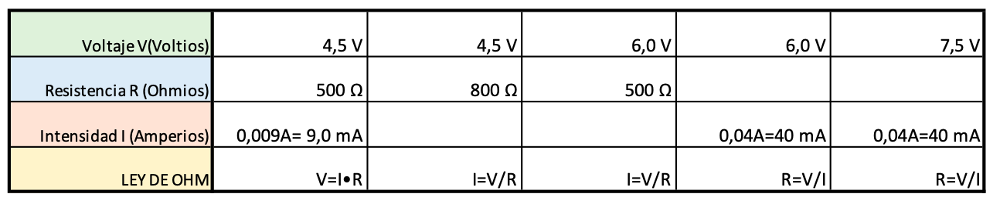</p>
</div>
<h2><br /><br /></h2>
<p></p></div>
</div>
</div>
</div>
</div>
</article>
<article class="iDevice_wrapper UDLcontentIdevice" id="id1643">
<div class="iDevice emphasis0" >
<div id="ta1643_814_2" class="block iDevice_content">
<div class="exe-udlContent exe-udlContent-engagement"><section class="exe-udlContent-block js-hidden"><header class="exe-udlContent-header exe-udlContent-character-1"><h2><span class="sr-av">Motus dice </span>¿Qué es lo que más te ha gustado de la interacción con tus compañeros?</h2></header><div class="exe-udlContent-content"><div class="exe-udlContent-content-main"><p style="text-align: justify;"><span style="font-size: 12pt;">¿Te ha llamado la atención alguna pregunta planteada por alguno de ellos? ¿Se lo has dicho? ¡A todos y todas nos gusta saber lo que hacemos bien!</span></p></div></div></section></div>
</div>
</div>
</article>
<article class="iDevice_wrapper textIdevice em_iDevice em_iDevice_udl_eng_curiosidad" id="id1644">
<div class="iDevice emphasis1" >
<header class="iDevice_header"><h1 class="iDeviceTitle">Contenido de refuerzo y profundización</h1></header>
<div class="iDevice_inner">
<div class="iDevice_content_wrapper">
<div id="ta1644_813_2" class="block iDevice_content">
<div class="exe-text"><p>Descubre más en:</p>
<p><a href="https://iesvillalbahervastecnologia.files.wordpress.com/2013/06/electricidad-2eso.pdf">Iesvillalbahervastecnología</a></p>
<p></p></div>
</div>
</div>
</div>
</div>
</article>
<div id="packageLicense" class="cc cc-by-nc-sa">
<p><span>Obra publicada con</span> <a rel="license" href="http://creativecommons.org/licenses/by-nc-sa/4.0/">Licencia Creative Commons Reconocimiento No comercial Compartir igual 4.0</a></p>
</div>
</section>
</div>
<div id='bottomPagination'>
<nav class="pagination noprt">
<a href="32_circuito_elctrico_y_componentes_simbologa_y_representacin.html" class="prev"><span><span>&laquo; </span>Anterior</span></a> <span class="sep">| </span><span class="page-counter">Página <strong>9</strong> de <strong>15</strong></span> <span class="sep">| </span><a href="34_circuitos_elctricos_abiertos_cerrados_y_en_cortocircuito.html" class="next"><span>Siguiente<span> &raquo;</span></span></a>
</nav>
</div>
</div>
<p id="made-with-eXe"><a href="https://exelearning.net/" target="_blank" rel="noopener"><span>Creado con eXeLearning<span> (Ventana nueva)</span></span></a></p><script type="text/javascript" src="_intef_js.js"></script></body></html>